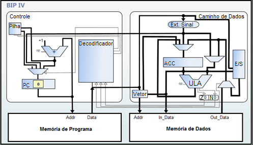

A arquitetura do BIP IV entende a arquitetura dos seus predecessores, acrescentando ainda, o suporte a procedimentos, a possibilidade de realizar manipulação de vetores e o controle de entrada e saída. Para dar suporte a tais funcionalidade houve a necessidade de acrescentar mais quatro registradores, que são eles, (i) o registrador INDR, responsável por armazenar o índicie base no suporte a vetores; (ii) o registrador SP, que tem a função de indicar o topo da pilha quando há a chamada de um procedimento; (iii) os registradores IN_PORT e (iv) OUT_PORT responsáveis pelo mapeamento de entrada e saída, respectivamente. (RECH, 2011).
A tabela abaixo contém o conjunto de instruções utilizadas pelo BIP IV para realizar as operações acrescentadas a ele.
| Código da operação | Instrução | Operação | Classe |
|---|---|---|---|
| 00000 - 00111 | Conjunto de instruções referentes ao BIP I. | ||
| 01000 - 01110 | Conjunto de instruções referentes ao BIP II. | ||
| 01111 - 10111 | Conjunto de instruções referentes ao BIP III. | ||
| 11000 | STOV | (endereço + INDR) ← ACC | Manipulação de Vetores |
| 11001 | LDV | ACC ← (endereço + INDR) | Manipulação de Vetores |
| 11010 | RETURN | PC ← (Topo da Pilha) | Suporte a Procedimentos |
| 11011 | Não utilizado | ||
| 11100 | CALL |
PC ← constante (Topo da Pilha) ← PC+1 |
Suporte a Procedimentos |
| 11101 - 11111 | Reservado |
Fonte: Adaptado de Rech (2011).
A organização do BIP IV foi especificada tendo como base a organização do BIP III. Para a especificação do BIP IV, além da especificação do BIP III, foram utilizados alguns componentes do µBIP. Tais componentes, como a pilha, que é responsável por dar suporte a procedimentos e a unidade de manipulação de vetores podem ser encontrados na figura abaixo que ilustra a organização do BIP IV. (RECH, 2011).
Fonte: Vieira (2012).